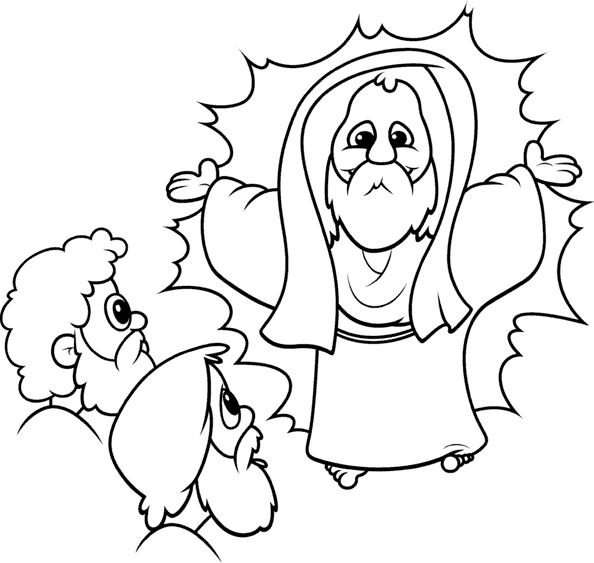

Remember
what I told you: I am going away,
but I will come back to you
again.
John 14:28a (NLT)
Holy
Bible, New Living Translation, copyright © 1996
by Tyndale
Charitable Trust. All rights reserved.
Some graphics © Dream Maker Software - www.coolclipart.com